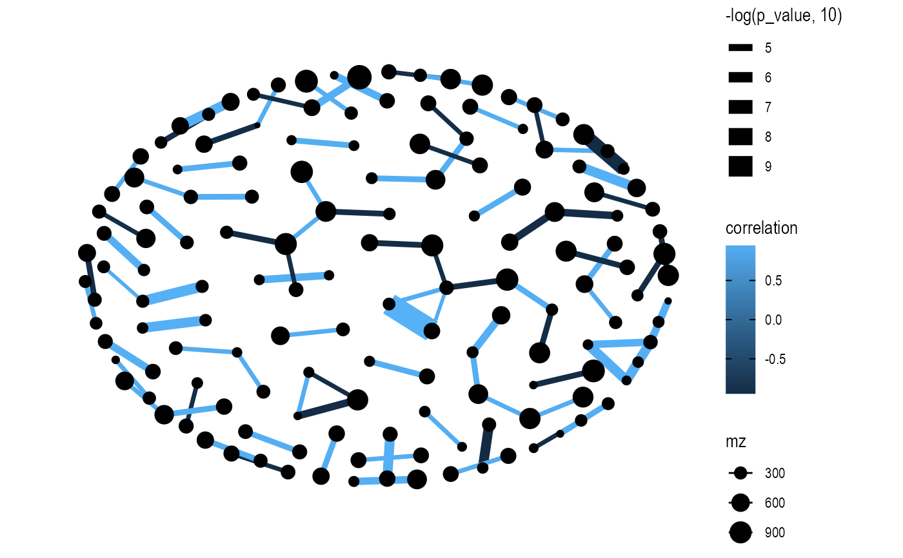
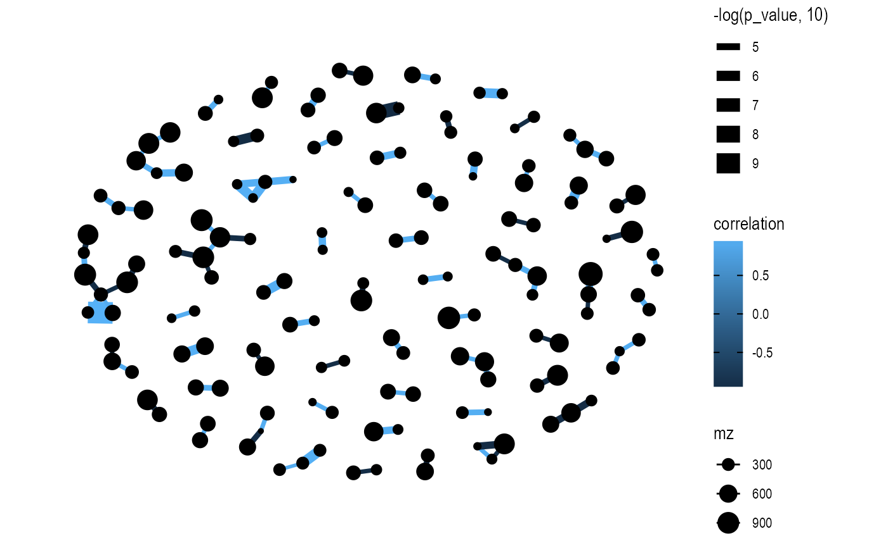

Calculate fold change.
convert_mass_dataset2graph(
object,
margin = c("variable", "sample"),
cor_method = c("spearman", "pearson", "kendall"),
p_adjust_method = c(c("BH", "holm", "hochberg", "hommel", "bonferroni", "BY", "fdr",
"none")),
p_adjust_cutoff = 0.05,
p_value_cutoff = 0.05,
pos_cor_cutoff = 0,
neg_cor_cutoff = 0
)tidymass-class object.
variable or sample
spearman, pearson or kendall
see ?p.adjust
between 0 to 1
between 0 to 1
between 0 to 1
between -1 to 0
tbl_graph class object (from tidygraph)
library(massdataset)
#> Version 1.0.12 (2022-08-07 01:01:35)
#>
#> Attaching package: ‘massdataset’
#> The following object is masked from ‘package:stats’:
#>
#> filter
library(magrittr)
library(dplyr)
#>
#> Attaching package: ‘dplyr’
#> The following object is masked from ‘package:massdataset’:
#>
#> intersect
#> The following objects are masked from ‘package:stats’:
#>
#> filter, lag
#> The following objects are masked from ‘package:base’:
#>
#> intersect, setdiff, setequal, union
data("liver_aging_pos")
liver_aging_pos
#> --------------------
#> massdataset version: 0.01
#> --------------------
#> 1.expression_data:[ 21607 x 24 data.frame]
#> 2.sample_info:[ 24 x 4 data.frame]
#> 3.variable_info:[ 21607 x 3 data.frame]
#> 4.sample_info_note:[ 4 x 2 data.frame]
#> 5.variable_info_note:[ 3 x 2 data.frame]
#> 6.ms2_data:[ 0 variables x 0 MS2 spectra]
#> --------------------
#> Processing information (extract_process_info())
#> 1 processings in total
#> Creation ----------
#> Package Function.used Time
#> 1 massdataset create_mass_dataset() 2021-12-23 00:24:02
qc_id <-
liver_aging_pos %>%
activate_mass_dataset(what = "sample_info") %>%
dplyr::filter(group == "QC") %>%
dplyr::pull(sample_id)
object <-
mutate_rsd(liver_aging_pos, according_to_samples = qc_id)
###only remain the features with rt > 100, mz > 150 and rsd < 30
object <-
object %>%
activate_mass_dataset(what = "variable_info") %>%
dplyr::filter(rt > 100) %>%
dplyr::filter(mz > 150) %>%
dplyr::filter(rsd < 30)
##only remain the week 24 samples
object <-
object %>%
activate_mass_dataset(what = "sample_info") %>%
dplyr::filter(group == "24W")
dim(object)
#> variables samples
#> 751 10
object <-
object %>%
`+`(1) %>%
log(10) %>%
scale_data(method = "auto")
graph_data <-
convert_mass_dataset2graph(
object = object,
margin = "variable",
cor_method = "spearman",
p_adjust_cutoff = 1,
p_value_cutoff = 0.0001,
pos_cor_cutoff = 0.7,
neg_cor_cutoff = -0.7
)
library(ggraph)
#> Loading required package: ggplot2
extrafont::loadfonts()
#> Registering font with R using pdfFont(): .Keyboard
#> Registering font with R using pdfFont(): .New York
#> Registering font with R using pdfFont(): .SF Compact
#> Registering font with R using pdfFont(): .SF Compact Rounded
#> Registering font with R using pdfFont(): .SF NS Mono
#> Registering font with R using pdfFont(): .SF NS Rounded
#> Registering font with R using pdfFont(): Academy Engraved LET
#> Registering font with R using pdfFont(): Andale Mono
#> More than one version of regular/bold/italic found for Apple Braille. Skipping setup for this font.
#> Registering font with R using pdfFont(): AppleMyungjo
#> Registering font with R using pdfFont(): Arial
#> Registering font with R using pdfFont(): Arial Black
#> Registering font with R using pdfFont(): Arial Narrow
#> Registering font with R using pdfFont(): Arial Rounded MT Bold
#> Registering font with R using pdfFont(): Arial Unicode MS
#> Registering font with R using pdfFont(): Bodoni 72 Smallcaps
#> Registering font with R using pdfFont(): Bodoni Ornaments
#> No regular (non-bold, non-italic) version of Brush Script MT. Skipping setup for this font.
#> Registering font with R using pdfFont(): Comic Sans MS
#> Registering font with R using pdfFont(): Courier New
#> No regular (non-bold, non-italic) version of DIN Alternate. Skipping setup for this font.
#> No regular (non-bold, non-italic) version of DIN Condensed. Skipping setup for this font.
#> Registering font with R using pdfFont(): Georgia
#> Registering font with R using pdfFont(): Impact
#> Registering font with R using pdfFont(): Khmer Sangam MN
#> Registering font with R using pdfFont(): Lao Sangam MN
#> Registering font with R using pdfFont(): Luminari
#> Registering font with R using pdfFont(): Microsoft Sans Serif
#> Registering font with R using pdfFont(): Noto Sans Adlam
#> Registering font with R using pdfFont(): Noto Sans Avestan
#> Registering font with R using pdfFont(): Noto Sans Bamum
#> Registering font with R using pdfFont(): Noto Sans Bassa Vah
#> Registering font with R using pdfFont(): Noto Sans Batak
#> Registering font with R using pdfFont(): Noto Sans Bhaiksuki
#> Registering font with R using pdfFont(): Noto Sans Brahmi
#> Registering font with R using pdfFont(): Noto Sans Buginese
#> Registering font with R using pdfFont(): Noto Sans Buhid
#> Registering font with R using pdfFont(): Noto Sans Carian
#> Registering font with R using pdfFont(): Noto Sans CaucAlban
#> Registering font with R using pdfFont(): Noto Sans Chakma
#> Registering font with R using pdfFont(): Noto Sans Cham
#> Registering font with R using pdfFont(): Noto Sans Coptic
#> Registering font with R using pdfFont(): Noto Sans Cuneiform
#> Registering font with R using pdfFont(): Noto Sans Cypriot
#> Registering font with R using pdfFont(): Noto Sans Duployan
#> Registering font with R using pdfFont(): Noto Sans EgyptHiero
#> Registering font with R using pdfFont(): Noto Sans Elbasan
#> Registering font with R using pdfFont(): Noto Sans Glagolitic
#> Registering font with R using pdfFont(): Noto Sans Gothic
#> Registering font with R using pdfFont(): Noto Sans HanifiRohg
#> Registering font with R using pdfFont(): Noto Sans Hanunoo
#> Registering font with R using pdfFont(): Noto Sans Hatran
#> Registering font with R using pdfFont(): Noto Sans ImpAramaic
#> Registering font with R using pdfFont(): Noto Sans InsPahlavi
#> Registering font with R using pdfFont(): Noto Sans InsParthi
#> Registering font with R using pdfFont(): Noto Sans Kaithi
#> Registering font with R using pdfFont(): Noto Sans Kayah Li
#> Registering font with R using pdfFont(): Noto Sans Kharoshthi
#> Registering font with R using pdfFont(): Noto Sans Khojki
#> Registering font with R using pdfFont(): Noto Sans Khudawadi
#> Registering font with R using pdfFont(): Noto Sans Lepcha
#> Registering font with R using pdfFont(): Noto Sans Limbu
#> Registering font with R using pdfFont(): Noto Sans Linear A
#> Registering font with R using pdfFont(): Noto Sans Linear B
#> Registering font with R using pdfFont(): Noto Sans Lisu
#> Registering font with R using pdfFont(): Noto Sans Lycian
#> Registering font with R using pdfFont(): Noto Sans Lydian
#> Registering font with R using pdfFont(): Noto Sans Mahajani
#> Registering font with R using pdfFont(): Noto Sans Mandaic
#> Registering font with R using pdfFont(): Noto Sans Manichaean
#> Registering font with R using pdfFont(): Noto Sans Marchen
#> Registering font with R using pdfFont(): Noto Sans MeeteiMayek
#> Registering font with R using pdfFont(): Noto Sans Mende Kikakui
#> Registering font with R using pdfFont(): Noto Sans Meroitic
#> Registering font with R using pdfFont(): Noto Sans Miao
#> Registering font with R using pdfFont(): Noto Sans Modi
#> Registering font with R using pdfFont(): Noto Sans Mongolian
#> Registering font with R using pdfFont(): Noto Sans Mro
#> Registering font with R using pdfFont(): Noto Sans Multani
#> Registering font with R using pdfFont(): Noto Sans N'Ko
#> Registering font with R using pdfFont(): Noto Sans Nabataean
#> Registering font with R using pdfFont(): Noto Sans NewTaiLue
#> Registering font with R using pdfFont(): Noto Sans Newa
#> Registering font with R using pdfFont(): Noto Sans Ogham
#> Registering font with R using pdfFont(): Noto Sans Ol Chiki
#> No regular (non-bold, non-italic) version of Noto Sans Old Italic. Skipping setup for this font.
#> Registering font with R using pdfFont(): Noto Sans Old Permic
#> Registering font with R using pdfFont(): Noto Sans Old Turkic
#> Registering font with R using pdfFont(): Noto Sans OldHung
#> Registering font with R using pdfFont(): Noto Sans OldNorArab
#> Registering font with R using pdfFont(): Noto Sans OldPersian
#> Registering font with R using pdfFont(): Noto Sans OldSouArab
#> Registering font with R using pdfFont(): Noto Sans Osage
#> Registering font with R using pdfFont(): Noto Sans Osmanya
#> Registering font with R using pdfFont(): Noto Sans Pahawh Hmong
#> Registering font with R using pdfFont(): Noto Sans Palmyrene
#> Registering font with R using pdfFont(): Noto Sans PauCinHau
#> Registering font with R using pdfFont(): Noto Sans PhagsPa
#> Registering font with R using pdfFont(): Noto Sans Phoenician
#> Registering font with R using pdfFont(): Noto Sans PsaPahlavi
#> Registering font with R using pdfFont(): Noto Sans Rejang
#> Registering font with R using pdfFont(): Noto Sans Runic
#> Registering font with R using pdfFont(): Noto Sans Samaritan
#> Registering font with R using pdfFont(): Noto Sans Saurashtra
#> Registering font with R using pdfFont(): Noto Sans Sharada
#> Registering font with R using pdfFont(): Noto Sans Shavian
#> Registering font with R using pdfFont(): Noto Sans Siddham
#> Registering font with R using pdfFont(): Noto Sans SoraSomp
#> Registering font with R using pdfFont(): Noto Sans Sundanese
#> Registering font with R using pdfFont(): Noto Sans Syloti Nagri
#> Registering font with R using pdfFont(): Noto Sans Syriac
#> Registering font with R using pdfFont(): Noto Sans Tagalog
#> Registering font with R using pdfFont(): Noto Sans Tagbanwa
#> Registering font with R using pdfFont(): Noto Sans Tai Le
#> Registering font with R using pdfFont(): Noto Sans Tai Tham
#> Registering font with R using pdfFont(): Noto Sans Tai Viet
#> Registering font with R using pdfFont(): Noto Sans Takri
#> Registering font with R using pdfFont(): Noto Sans Thaana
#> Registering font with R using pdfFont(): Noto Sans Tifinagh
#> Registering font with R using pdfFont(): Noto Sans Tirhuta
#> Registering font with R using pdfFont(): Noto Sans Ugaritic
#> Registering font with R using pdfFont(): Noto Sans Vai
#> Registering font with R using pdfFont(): Noto Sans Wancho
#> Registering font with R using pdfFont(): Noto Sans WarangCiti
#> Registering font with R using pdfFont(): Noto Sans Yi
#> Registering font with R using pdfFont(): Noto Serif Ahom
#> Registering font with R using pdfFont(): Noto Serif Balinese
#> Registering font with R using pdfFont(): Party LET
#> Registering font with R using pdfFont(): System Font
#> Registering font with R using pdfFont(): Tahoma
#> Registering font with R using pdfFont(): Times New Roman
#> Registering font with R using pdfFont(): Trattatello
#> Registering font with R using pdfFont(): Trebuchet MS
#> Registering font with R using pdfFont(): Verdana
#> Registering font with R using pdfFont(): Webdings
#> Registering font with R using pdfFont(): Wingdings
#> Registering font with R using pdfFont(): Wingdings 2
#> Registering font with R using pdfFont(): Wingdings 3
#> Registering font with R using postscriptFont(): .Keyboard
#> Registering font with R using postscriptFont(): .New York
#> Registering font with R using postscriptFont(): .SF Compact
#> Registering font with R using postscriptFont(): .SF Compact Rounded
#> Registering font with R using postscriptFont(): .SF NS Mono
#> Registering font with R using postscriptFont(): .SF NS Rounded
#> Registering font with R using postscriptFont(): Academy Engraved LET
#> Registering font with R using postscriptFont(): Andale Mono
#> More than one version of regular/bold/italic found for Apple Braille. Skipping setup for this font.
#> Registering font with R using postscriptFont(): AppleMyungjo
#> Registering font with R using postscriptFont(): Arial
#> Registering font with R using postscriptFont(): Arial Black
#> Registering font with R using postscriptFont(): Arial Narrow
#> Registering font with R using postscriptFont(): Arial Rounded MT Bold
#> Registering font with R using postscriptFont(): Arial Unicode MS
#> Registering font with R using postscriptFont(): Bodoni 72 Smallcaps
#> Registering font with R using postscriptFont(): Bodoni Ornaments
#> No regular (non-bold, non-italic) version of Brush Script MT. Skipping setup for this font.
#> Registering font with R using postscriptFont(): Comic Sans MS
#> Registering font with R using postscriptFont(): Courier New
#> No regular (non-bold, non-italic) version of DIN Alternate. Skipping setup for this font.
#> No regular (non-bold, non-italic) version of DIN Condensed. Skipping setup for this font.
#> Registering font with R using postscriptFont(): Georgia
#> Registering font with R using postscriptFont(): Impact
#> Registering font with R using postscriptFont(): Khmer Sangam MN
#> Registering font with R using postscriptFont(): Lao Sangam MN
#> Registering font with R using postscriptFont(): Luminari
#> Registering font with R using postscriptFont(): Microsoft Sans Serif
#> Registering font with R using postscriptFont(): Noto Sans Adlam
#> Registering font with R using postscriptFont(): Noto Sans Avestan
#> Registering font with R using postscriptFont(): Noto Sans Bamum
#> Registering font with R using postscriptFont(): Noto Sans Bassa Vah
#> Registering font with R using postscriptFont(): Noto Sans Batak
#> Registering font with R using postscriptFont(): Noto Sans Bhaiksuki
#> Registering font with R using postscriptFont(): Noto Sans Brahmi
#> Registering font with R using postscriptFont(): Noto Sans Buginese
#> Registering font with R using postscriptFont(): Noto Sans Buhid
#> Registering font with R using postscriptFont(): Noto Sans Carian
#> Registering font with R using postscriptFont(): Noto Sans CaucAlban
#> Registering font with R using postscriptFont(): Noto Sans Chakma
#> Registering font with R using postscriptFont(): Noto Sans Cham
#> Registering font with R using postscriptFont(): Noto Sans Coptic
#> Registering font with R using postscriptFont(): Noto Sans Cuneiform
#> Registering font with R using postscriptFont(): Noto Sans Cypriot
#> Registering font with R using postscriptFont(): Noto Sans Duployan
#> Registering font with R using postscriptFont(): Noto Sans EgyptHiero
#> Registering font with R using postscriptFont(): Noto Sans Elbasan
#> Registering font with R using postscriptFont(): Noto Sans Glagolitic
#> Registering font with R using postscriptFont(): Noto Sans Gothic
#> Registering font with R using postscriptFont(): Noto Sans HanifiRohg
#> Registering font with R using postscriptFont(): Noto Sans Hanunoo
#> Registering font with R using postscriptFont(): Noto Sans Hatran
#> Registering font with R using postscriptFont(): Noto Sans ImpAramaic
#> Registering font with R using postscriptFont(): Noto Sans InsPahlavi
#> Registering font with R using postscriptFont(): Noto Sans InsParthi
#> Registering font with R using postscriptFont(): Noto Sans Kaithi
#> Registering font with R using postscriptFont(): Noto Sans Kayah Li
#> Registering font with R using postscriptFont(): Noto Sans Kharoshthi
#> Registering font with R using postscriptFont(): Noto Sans Khojki
#> Registering font with R using postscriptFont(): Noto Sans Khudawadi
#> Registering font with R using postscriptFont(): Noto Sans Lepcha
#> Registering font with R using postscriptFont(): Noto Sans Limbu
#> Registering font with R using postscriptFont(): Noto Sans Linear A
#> Registering font with R using postscriptFont(): Noto Sans Linear B
#> Registering font with R using postscriptFont(): Noto Sans Lisu
#> Registering font with R using postscriptFont(): Noto Sans Lycian
#> Registering font with R using postscriptFont(): Noto Sans Lydian
#> Registering font with R using postscriptFont(): Noto Sans Mahajani
#> Registering font with R using postscriptFont(): Noto Sans Mandaic
#> Registering font with R using postscriptFont(): Noto Sans Manichaean
#> Registering font with R using postscriptFont(): Noto Sans Marchen
#> Registering font with R using postscriptFont(): Noto Sans MeeteiMayek
#> Registering font with R using postscriptFont(): Noto Sans Mende Kikakui
#> Registering font with R using postscriptFont(): Noto Sans Meroitic
#> Registering font with R using postscriptFont(): Noto Sans Miao
#> Registering font with R using postscriptFont(): Noto Sans Modi
#> Registering font with R using postscriptFont(): Noto Sans Mongolian
#> Registering font with R using postscriptFont(): Noto Sans Mro
#> Registering font with R using postscriptFont(): Noto Sans Multani
#> Registering font with R using postscriptFont(): Noto Sans N'Ko
#> Registering font with R using postscriptFont(): Noto Sans Nabataean
#> Registering font with R using postscriptFont(): Noto Sans NewTaiLue
#> Registering font with R using postscriptFont(): Noto Sans Newa
#> Registering font with R using postscriptFont(): Noto Sans Ogham
#> Registering font with R using postscriptFont(): Noto Sans Ol Chiki
#> No regular (non-bold, non-italic) version of Noto Sans Old Italic. Skipping setup for this font.
#> Registering font with R using postscriptFont(): Noto Sans Old Permic
#> Registering font with R using postscriptFont(): Noto Sans Old Turkic
#> Registering font with R using postscriptFont(): Noto Sans OldHung
#> Registering font with R using postscriptFont(): Noto Sans OldNorArab
#> Registering font with R using postscriptFont(): Noto Sans OldPersian
#> Registering font with R using postscriptFont(): Noto Sans OldSouArab
#> Registering font with R using postscriptFont(): Noto Sans Osage
#> Registering font with R using postscriptFont(): Noto Sans Osmanya
#> Registering font with R using postscriptFont(): Noto Sans Pahawh Hmong
#> Registering font with R using postscriptFont(): Noto Sans Palmyrene
#> Registering font with R using postscriptFont(): Noto Sans PauCinHau
#> Registering font with R using postscriptFont(): Noto Sans PhagsPa
#> Registering font with R using postscriptFont(): Noto Sans Phoenician
#> Registering font with R using postscriptFont(): Noto Sans PsaPahlavi
#> Registering font with R using postscriptFont(): Noto Sans Rejang
#> Registering font with R using postscriptFont(): Noto Sans Runic
#> Registering font with R using postscriptFont(): Noto Sans Samaritan
#> Registering font with R using postscriptFont(): Noto Sans Saurashtra
#> Registering font with R using postscriptFont(): Noto Sans Sharada
#> Registering font with R using postscriptFont(): Noto Sans Shavian
#> Registering font with R using postscriptFont(): Noto Sans Siddham
#> Registering font with R using postscriptFont(): Noto Sans SoraSomp
#> Registering font with R using postscriptFont(): Noto Sans Sundanese
#> Registering font with R using postscriptFont(): Noto Sans Syloti Nagri
#> Registering font with R using postscriptFont(): Noto Sans Syriac
#> Registering font with R using postscriptFont(): Noto Sans Tagalog
#> Registering font with R using postscriptFont(): Noto Sans Tagbanwa
#> Registering font with R using postscriptFont(): Noto Sans Tai Le
#> Registering font with R using postscriptFont(): Noto Sans Tai Tham
#> Registering font with R using postscriptFont(): Noto Sans Tai Viet
#> Registering font with R using postscriptFont(): Noto Sans Takri
#> Registering font with R using postscriptFont(): Noto Sans Thaana
#> Registering font with R using postscriptFont(): Noto Sans Tifinagh
#> Registering font with R using postscriptFont(): Noto Sans Tirhuta
#> Registering font with R using postscriptFont(): Noto Sans Ugaritic
#> Registering font with R using postscriptFont(): Noto Sans Vai
#> Registering font with R using postscriptFont(): Noto Sans Wancho
#> Registering font with R using postscriptFont(): Noto Sans WarangCiti
#> Registering font with R using postscriptFont(): Noto Sans Yi
#> Registering font with R using postscriptFont(): Noto Serif Ahom
#> Registering font with R using postscriptFont(): Noto Serif Balinese
#> Registering font with R using postscriptFont(): Party LET
#> Registering font with R using postscriptFont(): System Font
#> Registering font with R using postscriptFont(): Tahoma
#> Registering font with R using postscriptFont(): Times New Roman
#> Registering font with R using postscriptFont(): Trattatello
#> Registering font with R using postscriptFont(): Trebuchet MS
#> Registering font with R using postscriptFont(): Verdana
#> Registering font with R using postscriptFont(): Webdings
#> Registering font with R using postscriptFont(): Wingdings
#> Registering font with R using postscriptFont(): Wingdings 2
#> Registering font with R using postscriptFont(): Wingdings 3
ggraph(graph = graph_data, layout = "kk") +
geom_edge_fan(aes(color = correlation,
width = -log(p_value, 10)),
show.legend = TRUE) +
geom_node_point(aes(size = mz)) +
theme_graph()

ggraph(graph = graph_data, layout = "fr") +
geom_edge_fan(aes(color = correlation,
width = -log(p_value, 10)),
show.legend = TRUE) +
geom_node_point(aes(size = mz)) +
theme_graph()
